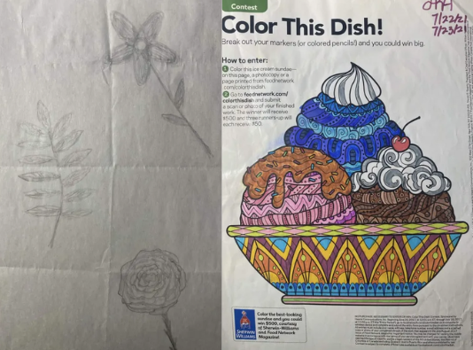

coloring and drawing are some of the most timeless art projects you can do and you can do with anything around you.
for coloring, find a coloring page you like and color it in. the photo is one from a magazine. for drawing, you can really draw anything! I like drawing flowers (seen in the photo), birds, and dresses. none of it needs to be perfect, it is just a fun and relaxing thing you can do to pass time!